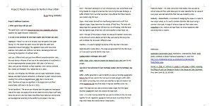
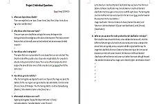

My Working Ability
Coorperation
Coorperation as a basic skill of job seekers is a crucial criteria for employment in many fields. A great team work could reflect the skills of organization and coordination,the sense of responsibility and working efficiency of members in a team. There is also a high standard for working well as part of a group required in the studying of environmental science, because many projects or field trips that need long-term preparation, accurate methods, complicated calculation and comprehensive analysis cannot be completed independently at all. Therefore working as a group is extremely necessary at this time as the it can divide the huge amount of work and more valuable ideas could be adopt through the discussion between group members. Following are some works completed by our group using GIS and ERMapper tools in the unit of Remote Sensing and Spatial Analysis.
Minimum Distance to Means Maximum Likelihood Standard
Landcover Classification Project (a) Landcover Classification Project (b)
Independent Work
Working well as an individual could be a reflection of personal comprehensive skills. Many ideas of the projects require to display the personal standpoints rather than the common thinking same as others. Thus working independently is a good way to demonstrate someone's logical ability, the mode of thinking and work arrangement. Here are some pictures of individual questions that I answered for my projects above.
 Flood Risk Individual Questions Landcover Classification Individual Questions